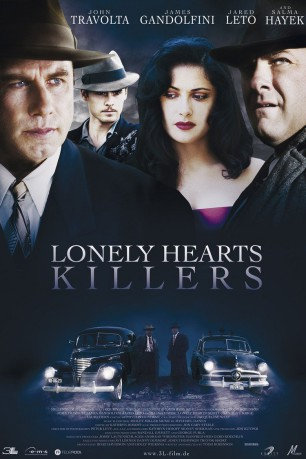

#2984 Lonely Hearts Killers
 
 IMDB-Wertung: 6.5 / 10
IMDB-Wertung: 6.5 / 10  Metascore: 60
Metascore: 60 
Als wären sie in der Hölle füreinander ausgesucht worden: In dem Moment, in dem sich der Kleinbetrüger Ray Fernandez und die Schönheit Martha Beck erstmals küssen, besiegelt sich ihr Schicksal. Gemeinsam täuschen sie einsame Frauen und nehmen sie nach Strich und Faden aus. Bald schon schrecken sie auch vor brutalem Mord nicht zurück. Ihre mit dem Blut Unschuldiger erkaufte Freiheit kann nicht von Dauer sein, denn die beiden Cops Elmer Robinson und Charles Hildebrandt sind dem mörderischen Paar längst auf der Spur ...
Jahr: 2006
Dauer: 107 Minuten
FSK: 16
Land: Deutschland Studio: 3L FilmverleihTonspuren: DTS - ,
Untertitel:
Auflösung: 720p (1280x544) Größe: 3911 MB
Genre: Thriller, Drama, Krimi, Liebe
Regisseur: Todd Robinson
Drehbuch: Todd Robinson
Soundtrack: Mychael Danna
Darsteller:
 John Travolta als Det. Elmer Robinson
John Travolta als Det. Elmer Robinson James Gandolfini als Det. Charles Hilderbrandt
James Gandolfini als Det. Charles Hilderbrandt Jared Leto als Ray Fernandez
Jared Leto als Ray Fernandez Salma Hayek als Martha Beck
Salma Hayek als Martha Beck Scott Caan als Det. Reilly
Scott Caan als Det. Reilly Laura Dern als Rene Fodie
Laura Dern als Rene Fodie Michael Gaston als D.A. Hunt
Michael Gaston als D.A. Hunt Bruce MacVittie als Det. Eastman
Bruce MacVittie als Det. Eastman- Dan Byrd als Eddie Robinson
 Alice Krige als Janet Long
Alice Krige als Janet Long Dagmara Dominczyk als Delphine Downing
Dagmara Dominczyk als Delphine Downing John Doman als Chief MacSwain
John Doman als Chief MacSwain Bailee Madison als Rainelle Downing
Bailee Madison als Rainelle Downing- Ellen Travolta als Ida
 Jason Gray-Stanford als Officer Chetnick
Jason Gray-Stanford als Officer Chetnick- Kristian Truelsen als Bank Manager
 Christa Campbell als Sara Long
Christa Campbell als Sara Long Marc Macaulay als Warden Broady
Marc Macaulay als Warden Broady- Todd Terry als Thief
- Shannon Murphy als Patty Forsythe
 Michael Rispoli als Coroner
Michael Rispoli als Coroner Nick Loren als Detective January
Nick Loren als Detective January- Karl Anthony als Hotel Clerk
- Matt Huffman als Mrs. Clayman's Son
 Arian Ash als Marian Duff
Arian Ash als Marian Duff- Gerald Owens als Postmaster
- Lauren Leech als Teenage Girl
- Allison McKay als Mrs. Paterson
- Bill Kelley als Rene's Father
- Heather Dawn als MacSwain's Secretary
- Rachel Reynolds als Female Airplane Passenger
- Rachel Specter als Janice
 Allen Walls als Featured Dancer
Allen Walls als Featured Dancer- Paul Carafotes als Detective Paco , uncredited
- Khris Gibston als Assault Witness , uncredited
- Andrew E. Wheeler als Det. Tooley
- Sam Travolta als Foreman
- James Martin Roberts als Young Black Man
- Steve Maye als Michigan Cop
- Jonathan Rau als Uniformed Cop
- Valerie Grant als Mrs. Clayman
- Petrus Antonius als Landlord
- Jeff Farley als Minister
- Jack Swanson als Fruit Stand Attendant
- Margaret Travolta als Mineola Female Dispatcher
- Jimmy Leeward als Pilot
- Caroline Ross als Prison Matron
- Traci Robinson als Prison Matron
- Tom Chapman als Framer
- Charles M. Creel als Kent County Detective , uncredited
Datei: X:\2006(G-M)\Lonely Hearts Killers (2006, FSK16, 1280x544).mkv seit 13.01.2016
Festplatte: HD 2005(G-Z)-2006(A-Z)
 Es gibt insgesamt 48 Filme in der Gruppe '2006(G-M)'
Es gibt insgesamt 48 Filme in der Gruppe '2006(G-M)'